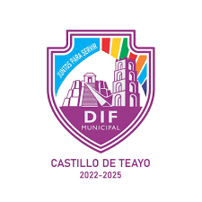

dif castillo de teayo,veracruz.

El sistema nacional para el desarrollo integral
de las familias,comunmente llamado dif nacional o DIF
es un secretaria de descentralizado mexicano sectorisado
ala secretaria de la salud con funciones de la institucion
publica encargada de dirigir la asistencia social a nivel
nacional